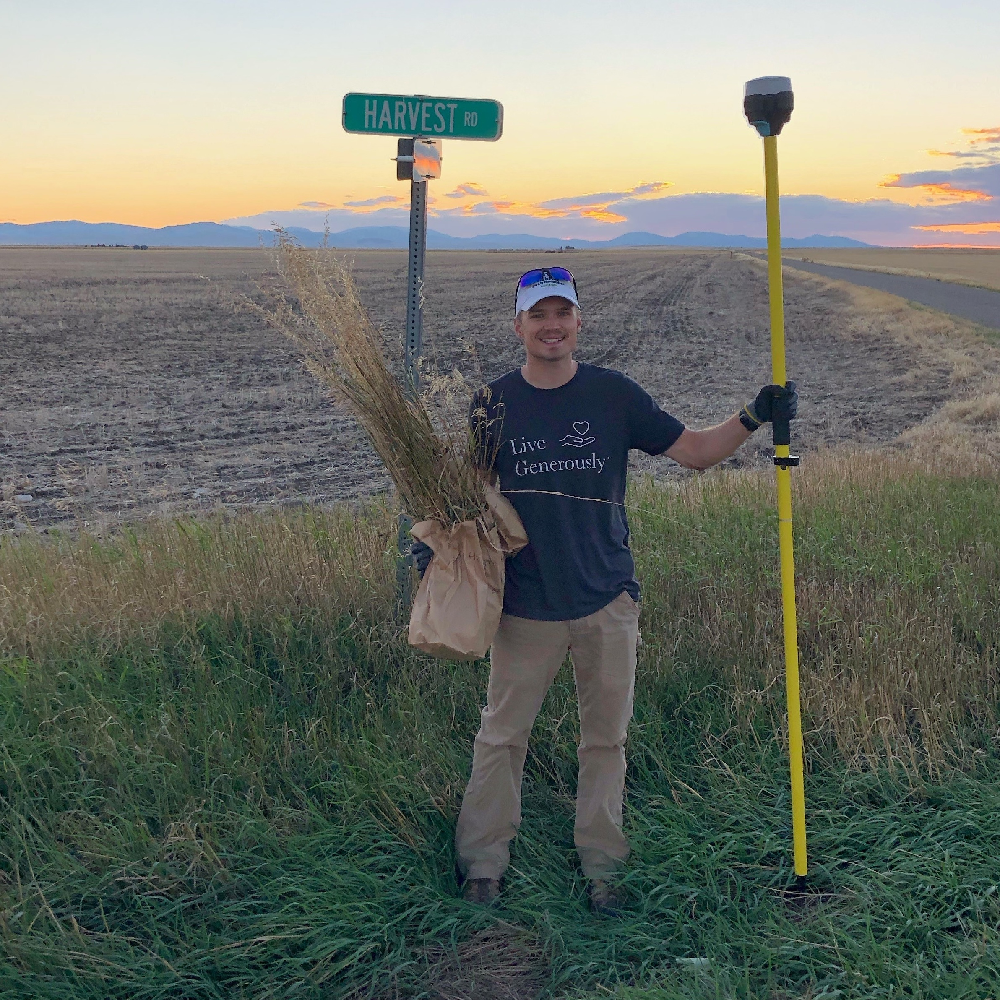

Jackson R. Strand
I am a PhD student in Ecology and Environmental Sciences at Montana State University, where I study applied entomology and invasive plant management. My research focuses on the biological control of yellow and Dalmatian toadflax in Montana and South Dakota, using insect agents to support sustainable management and ecosystem restoration.
 M.S. in Entomology, Montana State University
M.S. in Entomology, Montana State University
 B.S. in Biology, University of Minnesota
B.S. in Biology, University of Minnesota
Research Interests
I am interested in understanding the ecological roles of insects and their potential to address pressing global challenges, including improving agricultural productivity, combating climate change, and advancing waste management strategies. Through my research, I seek to develop innovative, nature-based solutions to these complex problems, focusing on the intersection of entomology, ecology, and sustainability.
My Master’s thesis with Dr. David Weaver at Montana State University focused on the agroecological role of smooth brome grass in managing wheat stem sawfly (WSS) populations. Specifically, I investigated how smooth brome found along roadways and in coulees could reduce WSS larvae and provide a refuge for parasitoids Bracon cephi and B. lissogaster. Using a combination of volatile organic compound (VOC) analysis and field observations, I demonstrated that smooth brome, when found growing adjacent to wheat fields, could reduce WSS survival and support second-generation parasitoids. Please see my thesis or my thesis defense recording for more information.

My current PhD project with Dr. Robert Peterson at Montana State University is investigating the efficacy of the weevil Rhinusa pilosa for the biological control of invasive yellow toadflax (Linaria vulgaris) in Montana and South Dakota. Specifically, I am interested in the ecological impacts of megaherbivores, parastioids, and climatic shifts on the establishment of beneficial R. pilosa populations.
Education
- Graduate Committee: Dr. Robert Peterson (co-chair), Dr. David Weaver (co-chair),
Dr. Sharlene Sing, Dr. William Wetzel
- Graduate Committee: Dr. David Weaver (co-chair), Dr. Tracy Sterling (co-chair), Dr. Robert Peterson
- Graduate Certificate in Applied Statistics
- Minor: Marine Biology
Publications
Check out my Publications page
- Strand JR, Peterson RKD, Sterling TM, Weaver DK. 2025. Sensory and behavioral responses of braconid parasitoids to changes in volatile emissions induced by wheat stem sawfly (Hymenoptera: Cephidae) larval feeding in winter wheat and smooth brome. Journal of Insect Science. 25(2). DOI: 10.1093/jisesa/ieaf016
- Strand JR, Peterson RKD, Sterling TM, Weaver DK. 2024. Agroecological importance of smooth brome in managing wheat stem sawfly (Hymenoptera: Cephidae) via associated braconid parasitoids. Journal of Economic Entomology. 117(6): 2344–2354. DOI: 10.1093/jee/toae246
Honors & Awards
- Extreme Biofilms NRT, Montana State Unviersity
- Awarded for the proposal “Mapping Biocontrol Success: Drone NDVI Monitoring of Invasive Toadflax in Post-Fire Montana Ecosystems”
- Montana State University
- Montana State University Library
- Funded the publication of Strand et al. 2025
- National Forum on Biological Control, Annapolis, MD
- The Graduate School, Montana State University
- Montana State University Library
- Funded the publication of Strand et al. 2024
- Entomology 2023, National Harbor, MD
- Entomological Society of America
- College of Agriculture, Montana State University
- 2023 LRES GSO Student Research Colloquium
- LRES Graduate Student Organization, Montana State University
- Montana Grain Growers Association
- The Graduate School, Montana State University
Seminars & Presentations
Check out my Talks & Presentations page
Contributed presentations at scientific meetings
- SE Sing, Strand JR, Peterson RKD, Weaver DK. 2025. Understanding Host Preference in Mecinus janthinus and M. janthiniformis: Implications of Hybridization for Effective Biological Control. National Forum on Biological Control Conference. Annapolis, MD.
- Strand JR, Sterling TM, Peterson RKD, Weaver DK. 2025. Agroecological Importance of Smooth Brome in Hosting Braconid Parasitoids Associated with the Insect Pest Wheat Stem Sawfly. Annual Meeting of the Western Society of Weed Science. Seattle, WA. (poster)
- Strand JR, Peterson RKD, Sterling TM, Weaver DK. 2024. Agroecological importance of smooth brome in managing wheat stem sawfly (Hymenoptera: Cephidae) via its associated braconid parasitoids. Session: Grad Competition, Plant-Insect Ecosystems: IPM – General and Field Crops. Annual Meeting of the Entomological Society of America, Phoenix, AZ.
- Strand JR, Weaver DK, Sterling TM, Peterson RKD. 2024. The role of chemical ecology and agroecological importance of smooth brome in biological control of the wheat stem sawfly by native parasitoids. Masters of Entomology Defense. Montana State University, Bozeman, MT.
- Sing SE, Ward SM, Peterson RKD, Strand JR, Friesenhahn E, Holland M, Hubbard CE, Randall CB, Weaver DK. 2024. Biological control of hybrid toadflax: insights from chemical ecology. National Forum on Biological Control Conference. Annapolis, MD.
- Strand JR. 2024. How smooth brome and parasitoids can aid in the biological control of wheat stem sawfly. Montana Wheat and Barley Committee - March Madness. Montana State University, Bozeman, MT.
- Strand JR, Weaver DK, Sterling TM, Peterson RKD. 2023. Using organic volatile compounds to assess the relationship between wheat stem sawfly, parasitoids, and smooth brome. Session: Grad Competition, Plant-Insect Ecosystems: Chemical Ecology 2. Annual Meeting of the Entomological Society of America, National Harbor, MD. Second place in section.
- Strand JR, Weaver DK, Sterling TM, Peterson RKD. 2023. The importance of smooth brome and parasitoids in wheat stem sawfly biocontrol. 2023 Land Resources and Environmental Sciences Graduate Student Organization Research Colloquium. Montana State University, Bozeman, MT. First place overall.
- Strand JR, Weaver DK, Sterling TM, Peterson RKD. 2022. Using organic volatile compounds to assess the relationship between wheat stem sawfly, parasitoids, and smooth brome. Session: Grad Competition, Plant-Insect Ecosystems: Chemical Ecology 1. Annual Meeting of the Entomological Society of America. Vancouver, BC, Canada.
- Strand JR, Weaver DK, Sterling TM, Peterson RKD. 2022. Importance of parasitoids and smooth brome for integrated pest management of wheat stem sawfly. 2022 Land Resources and Environmental Sciences Graduate Student Organization Research Colloquium. Montana State University, Bozeman, MT.
- Strand JR, Weaver DK, Sterling TM, Peterson RKD. 2021. Importance of parasitoids and smooth brome for integrated pest management of wheat stem sawfly. Session: Plant Insect-Ecosystems: IPM – General. Annual Meeting of the Entomological Society of America, Denver, CO.
Invited Guest Lectures
- Strand JR. Can Bugs Help Us? ENSC 210: Role of Plants in the Environment. Instructor: Will Wetzel. March 2025.
Workshops
- Understanding Wheat Stem Sawfly. 2022 Integrated Pest Management Workshop, “MSU Extension IPM Workshop: Diagnosing Plant Health Problems” Montana State University, Bozeman, MT.
Teaching
Teaching Assisstant
Integrated Pest Management (AGSC 401)
Fall 2023, 3 credits, 20 undergraduates, 10 graduate students
Online course taught by Dr. David Weaver
Integrated Pest Management (AGSC 401)
Fall 2025, 3 credits, 25 undergraduates, 10 graduate students
Online course taught by Dr. David Weaver
Invited Guest Lecturer
Role of Plants in the Environment (ENSC 210)
Spring 2025, 3 creidts
“Can Bugs Help Us?”
Course taught by Dr. Will Wetzel
Principals of Biological Diversity (BIOB 260)
Fall 2025, 5 credits
“Introduction to Insect Identification and Sampling”
Course taught by Erin Teichroew and Chris Larson
Service
Society Memberships
Active Community Volunteer
Co-Hosted Events
LRES Graduate Student Organization Annual Symposium
-
LEPS 2025
Role: Chair
Location: Montana State University, Bozeman, MT
Date: April 7, 2025
Event website: LEPS 2025 -
2024 LRES-PSPP Student Research Symposium
Role: Chair & event emcee
Location: Montana State University, Bozeman, MT
Date: April 18, 2024
Hyperlink: 2024 Symposium -
2023 LRES Colloquium
Role: Treasurer
Location: Montana State University, Bozeman, MT
Date: April 13, 2023 -
2022 LRES Colloquium
Role: Treasurer
Location: Montana State University, Bozeman, MT
Date: April 29, 2022
Employment History
- Provided digital support between 3M employees and the 3M Chemical Data Management System (CDMS).
- Integrated, tested, and supported user and data interface between CDMS and SAP.
- Generated, designed, and communicated unique, detailed reports of material information using SQL, Microsoft Excel, and SAP.
- Worked on a team to collect and analyze mosquito larvae samples from wetland areas across the St. Paul metropolitan area.
- Independently maintained low adult mosquito populations in Oakdale, MN by surveying and treating both adults and larvae.
- Maintained healthy conditions for equine patients at the University of Minnesota Horse Veterinary Center and Large Animal Hospital.
- Trained and managed new members of the crew.